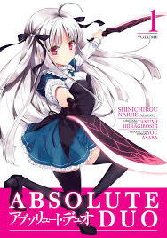

Da guardare e leggere
My Anime List
Apri le copertine per visitare i link di anime e manga. Puoi segnare quello che hai già visto.
| Nome | Anime | Manga | Stato |
|---|---|---|---|
| Arifureta Shokugyō de Sekaisaikyō | |||
| Absolute Duo |  |
||
| Shingeki no Kyojin | |||
| High School DxD | |||
| Arifureta Shokugyō de Sekaisaikyō | |||
| Arifureta Shokugyō de Sekaisaikyō | |||
| Totale voci | 6 anime · 6 manga | ||